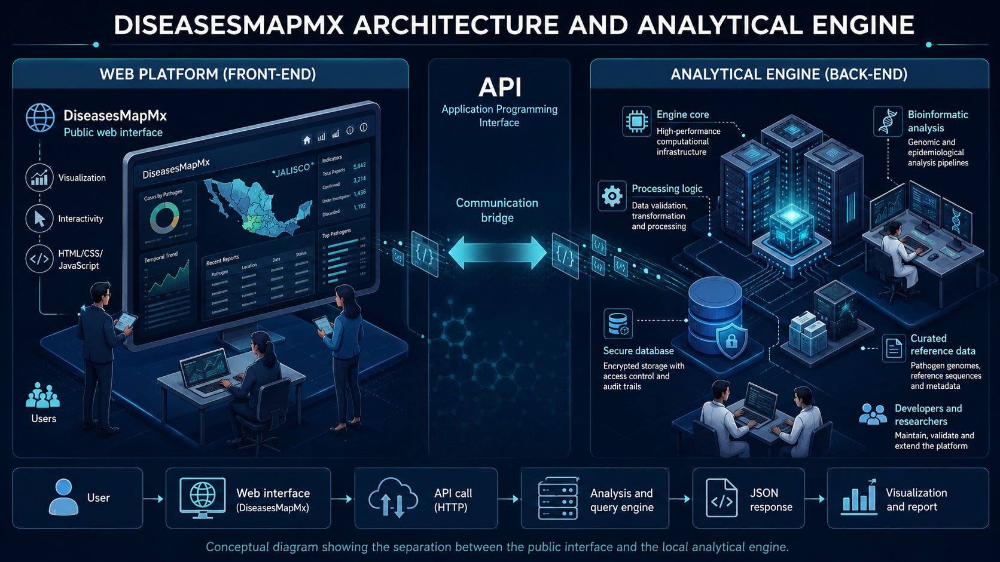

About the Platform
DiseasesMapMx is an independent scientific visualization initiative focused on genomic surveillance and molecular epidemiology of swine pathogens in Mexico. The platform integrates genomic, molecular, and epidemiological metadata associated with PRRSV and PCV2 circulation, allowing interactive exploration of spatial, temporal, and molecular patterns relevant to swine health and disease surveillance.
Scientific Researcher, Founder and Lead Developer

Academic Profiles
Scientific and Technical Collaboration
José Francisco Rivera Benítez
Scientific Research Collaborator focused on viral and molecular diagnostics and laboratory support for research and epidemiological surveillance activities associated with the detection and characterization of infectious diseases in pigs.
Researcher at the National Institute for Forestry, Agricultural and Livestock Research (INIFAP), Mexico. Affiliated with the National Disciplinary Research Center for Animal Health and Food Safety (CENID-SAI), Palo Alto.
Was recently elected as a member of the Mexican Academy of Sciences in recognition of their scientific contributions to the field of virology. View the announcement
Academic Profiles
![[Collaborator Name]](assets/img/colaborador1.jpg)
Institutional Collaboration and Data Attribution
DiseasesMapMx is an independent scientific visualization and epidemiological surveillance initiative developed for research, academic, and informational purposes. The platform integrates publicly available genomic information and epidemiological metadata associated with swine pathogen surveillance and scientific research activities conducted in Mexico.
Field collaboration, laboratory activities, and data generation processes have involved participation from collaborating institutions, researchers, and swine health stakeholders. Institutional affiliations mentioned within the platform are presented exclusively for scientific attribution and collaboration acknowledgment purposes.
How to Use the Dashboard
The dashboard is intended for exploratory visualization of curated, non-identifying molecular surveillance metadata. Users can review summary indicators, filter records by virus, year, region, production stage, gene, lineage or other available variables, and explore spatial, temporal and molecular patterns in the dataset.
The maps, graphs and tables should be interpreted as descriptive surveillance summaries, not as official estimates of prevalence, incidence or farm-level disease status. Counts represent records included in the curated dataset and may be influenced by sampling design, diagnostic selection, sequence availability and metadata completeness.
- Begin by selecting the pathogen or group of records of interest.
- Use filters to restrict the view by year, region, production stage, gene or lineage.
- Interpret map outputs at aggregated geographic levels; exact farm locations are not displayed.
- Use filtered tables and GenBank links, when available, to review record-level context.
- Consider dashboard outputs as hypothesis-generating tools for epidemiological interpretation and follow-up analysis.
About the Sequence Analysis Module
The PRRSV-2 ORF5 sequence-analysis module performs preliminary closest-reference screening against a curated PRRSV-2 ORF5 reference panel. It validates nucleotide input, applies a hard low-identity interpretation gate, compares the query with curated references, links accepted results to a local master-tree context, and translates the ORF5 coding region to summarize GP5 amino acid differences.
This module is not a diagnostic report and does not constitute formal phylogenetic placement. Results should be interpreted as a preliminary screening layer that requires sequence-quality review, reference-panel context, phylogenetic analysis, epidemiological information and expert interpretation.
- Recommended input: PRRSV-2 ORF5 nucleotide sequence in FASTA or raw nucleotide format.
- Sequences below the minimum ORF5 identity threshold are blocked from lineage interpretation.
- Authorized submissions can be stored locally for scientific review; public release is never automatic.
- The public report excludes the submitted nucleotide sequence, complete FASTA database, curated metadata table, alignment and master Newick tree.
- At this stage, access to the analysis engine is enabled by request and for limited testing periods only.
Platform Architecture and Analysis Engine
DiseasesMapMx operates as a public web platform separated from its local analytical engine. The interface supports visualization, request submission, and result display; the analytical engine performs validation, processing, curated-reference queries, and structured result delivery through an API.

This separation keeps the public interface lightweight and documented while sensitive processing, curated reference data, and authorized submissions remain controlled within the analytical environment.